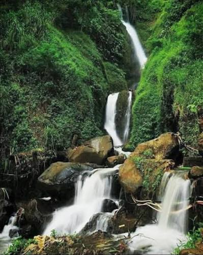

Curug
Curug Kapak Kuda
Dusun Tapak Kuda, Desa Sadawangi, Lemahsugih

Ada apa di sini?
Kenali curug bertingkat yang juga disebut Curug Tapak Kuda atau Curug Citerus.
Fasilitas di lokasi
Fasilitas dan layanan resmi belum terkonfirmasi.
Sebelum berangkat
- Jam buka
- Cek akses ke warga atau perangkat desa sebelum berangkat.
- Tiket & parkir
- Status tiket belum terkonfirmasi. Cek ke perangkat desa.
Lokasi
Buka rute di Google MapsIkuti jalur pengunjung dan bawa kembali bungkus makanan.